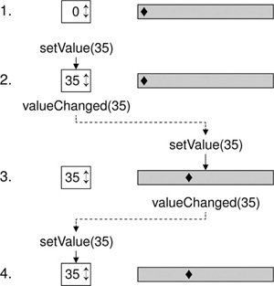

Laying Out WidgetsIn this section, we will create a small example application that demonstrates how to use layouts to manage the geometry of widgets in a window and how to use signals and slots to synchronize two widgets. The application asks for the user's age, which the user can enter by manipulating either a spin box or a slider. The application consists of three widgets: a QSpinBox, a QSlider, and a QWidget. The QWidget is the application's main window. The QSpinBox and the QSlider are rendered inside the QWidget; they are children of the QWidget. Alternatively, we can say that the QWidget is the parent of the QSpinBox and the QSlider. The QWidget has no parent itself because it is being used as a top-level window. The constructors for QWidget and all of its subclasses take a QWidget * parameter that specifies the parent widget. Figure 1.4. The Age application
Here's the source code:
1 #include <QApplication>
2 #include <QHBoxLayout>
3 #include <QSlider>
4 #include <QSpinBox>
5 int main(int argc, char *argv[])
6 {
7 QApplication app(argc, argv);
8 QWidget *window = new QWidget;
9 window->setWindowTitle("Enter Your Age");
10 QSpinBox *spinBox = new QSpinBox;
11 QSlider *slider = new QSlider(Qt::Horizontal);
12 spinBox->setRange(0, 130);
13 slider->setRange(0, 130);
14 QObject::connect(spinBox, SIGNAL(valueChanged(int)),
15 slider, SLOT(setValue(int)));
16 QObject::connect(slider, SIGNAL(valueChanged(int)),
17 spinBox, SLOT(setValue(int)));
18 spinBox->setValue(35);
19 QHBoxLayout *layout = new QHBoxLayout;
20 layout->addWidget(spinBox);
21 layout->addWidget(slider);
22 window->setLayout(layout);
23 window->show();
24 return app.exec();
25 }
Lines 8 and 9 set up the QWidget that will serve as the application's main window. We call setWindowTitle() to set the text displayed in the window's title bar. Lines 10 and 11 create a QSpinBox and a QSlider, and lines 12 and 13 set their valid ranges. We can safely assume that the user is at most 130 years old. We could pass window to the QSpinBox and QSlider constructors, specifying that these widgets should have window as their parent, but it isn't necessary here because the layout system will figure this out by itself and automatically set the parent of the spin box and the slider, as we will see shortly. The two QObject::connect() calls shown in lines 14 to 17 ensure that the spin box and the slider are synchronized so that they always show the same value. Whenever the value of one widget changes, its valueChanged(int) signal is emitted, and the setValue(int) slot of the other widget is called with the new value. Line 18 sets the spin box value to 35. When this happens, the QSpinBox emits the valueChanged(int) signal with an int argument of 35. This argument is passed to the QSlider's setValue(int) slot, which sets the slider value to 35. The slider then emits the valueChanged(int) signal, because its own value changed, triggering the spin box's setValue(int) slot. But at this point, setValue(int) doesn't emit any signal, since the spin box value is already 35. This prevents infinite recursion. Figure 1.5 summarizes the situation. Figure 1.5. Changing one widget's value changes both In lines 19 to 22, we lay out the spin box and slider widgets using a layout manager. A layout manager is an object that sets the size and position of the widgets that lie under its responsibility. Qt has three main layout manager classes:
The call to QWidget::setLayout() on line 22 installs the layout manager on the window. Behind the scenes, the QSpinBox and QSlider are "reparented" to be children of the widget on which the layout is installed, and for this reason we don't need to specify an explicit parent when we construct a widget that will be put in a layout. Figure 1.6. The Age application's widgets
Even though we didn't set the position or size of any widget explicitly, the QSpinBox and QSlider appear nicely laid out side by side. This is because QHBox-Layout automatically assigns reasonable positions and sizes to the widgets for which it is responsible, based on their needs. The layout managers free us from the chore of hard-coding screen positions in our applications and ensure that windows resize smoothly. Qt's approach to building user interfaces is simple to understand and very flexible. The most common pattern that Qt programmers use is to instantiate the required widgets and then set their properties as necessary. Programmers add the widgets to layouts, which automatically take care of sizing and positioning. User interface behavior is managed by connecting widgets together using Qt's signals and slots mechanism. |